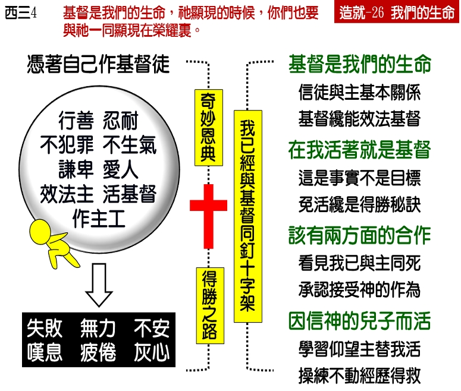

诗歌：378 首、763 首
重要经文：
歌罗西书三章四节：基督是我们的生命，祂显现的时候，你们也要与祂一同显现在荣耀里。
腓立比书一章二十一节上：因为在我，活着就是基督。
加拉太书二章二十节：我已经与基督同钉十字架；现在活着的，不再是我，乃是基督在我里面活着；并且我如今在肉身里所活的生命，是我在神儿子的信里，与祂联结所活的，祂是爱我，为我舍了自己。
纲目要点：
壹 基督是我们的生命：
一 圣经不叫我们凭己去效法主。
二 主与我们基本的关系是基督是我们的生命。
三 基督徒需要经历主在地上的生活以跟从主走前面的路。
贰 我活着就是基督：
一 主在我们里面活了，我们就能够免活。
二 这一个是得胜的秘诀与方法。
三 方法乃是自己不活，让基督来活。
参 我已经与基督同钉十字架：
一 基督死了，把我也钉死了，这是神作的事。
二 我要承认这件事，我要说『阿们。』
三 犯罪、软弱、骄傲与脾气，因没有看见基督在我里面活着。
肆 因信神的儿子而活的态度：
一 我仰望你在我里面活！我所有的生活，你都替我活。
二 主，你保守我，叫我不要动。主，你作主，你来活！
信息选读：
基督是我们的生命
我们要知道，这乃是神给我们的一个奇妙的恩典。在这里面有一条路，叫所有失败的人能够得胜，叫所有污秽的人能够洁净，叫所有凡俗的人能够圣洁，叫所有属地的人能够属天，叫所有属肉体的人能够属灵。这是方法，不是目标。这方法就是代替的生命。在主的恩典里，如何有替死，也如何有替活。主在十字架上，替我们担当罪，借着死叫我们免去死，使我们的罪能够得着赦免，使我们能够免去审判；照样，保罗在这里也是告诉我们，主在我们里面活了，我们就能够免活。这意思很简单，就是祂在我们里面活，就不必我们活了。祂在十字架上如何替我们死了，今天祂在我们里面也如何替我们活着。保罗不是说，我盼望我能够不活着，我盼望我能够让祂活。他乃是告诉我们说，我不活了，让祂活着。『现在活着的，不再是我，乃是基督在我里面活着。』这一个，是得胜的秘诀；这一个，就是得胜的方法。有一天当我们听见我们免死的时候，我们觉得这是大福音；照样，有一天当我们听见我们可以免活了，这也是大福音。我们盼望初信的弟兄姊妹多多的祷告，求神给你光照，使你看见，基督能活在人里面，人能用不着自己活。如果不是这样，那你要维持一个见证，要维持一个基督徒的生活，要拒绝试探，要背十字架，要顺服神的旨意，…你会觉得这一种生活实在是十分吃力的生活。有许多信主的人，觉得维持基督徒的生活是一件吃力的事，而且是非常吃力的事。天天在那里作，天天在那里叹气；天天在那里努力，天天在那里失败；天天在那里维持见证，天天在那里羞辱主。有许多人要拒绝罪，没有能力；不拒绝罪，心里不平安；要忍耐，不能忍耐；生气，心里不平安；要爱，心里没有能力；恨人，心里难过。许多人作基督徒都作得累了，作得疲倦了。他们觉得作基督徒好像挑了重担爬山，总爬不上去。当他没有信主的时候，是劳苦背罪孽的重担；自从他信主之后，是劳苦背圣洁的重担。把那一个担子，换这一个担子，也是很累，也是很苦。他们这样的情形，显明他们是作错了基督徒。
我已经与基督同钉十字架
关于我们与基督同钉十字架的这一件事，必须有两方面的合作，才能成为我们的经历。单有一方面是不行的，总得两方面全有才行。我们里面的眼睛必须被开起来，看见当主耶稣在十字架上被钉死时，神把我们摆在基督里，与祂一同钉死了，这是神那一方面的工作。你相信主耶稣替你死，担当你的罪，这是一千九百多年前的事。照样，当主耶稣钉十字架的时候，神也把你这一个人归在主耶稣身上。你的罪如何是在一千九百多年前解决的，你这一个人也如何是在一千九百多年前解决的。神什么时候把你的罪归在主耶稣身上，神也是什么时候把你这个人归在主耶稣身上。今天有许多基督徒，自己不行，还要去行，这就没有办法。比方有一个人，他不能忍耐，他怎么作呢？他如果在那里要自己忍耐，要尽他的力量去忍耐，祷告也是求忍耐，作工也是想忍耐，那么他越要忍耐，反而越不能忍耐。他应当说，『主，你已经把我这一个不能忍耐的人钉死了。我是不能忍耐的人，我不要忍耐，我也不想忍耐了。』这才是得胜的路。主把你钉十字架，你应当说，『阿们！』主把你钉十字架，如果你还想靠自己忍耐，那就不行。神认为你不行，要把你钉死，而你自己却还想试试看，忍耐忍耐看；神看你不行，要把你钉死，而你却看自己还可以，想要尽力量来作基督徒；你若是这样，你就大错特错了。神已经认为你不能作，所以只好把你钉死在十字架上，而你自己却以为能作；神看你不行，要你死，而你还是想要立志，想要挣扎；这是何等愚昧的事！神认为你不行，你也承认你不行，这就好了；神看你该死，你说『阿们，应当让我死，』这就行了。十字架是神对于我们的断案。据神看，你不行。你如果行，神就不把你钉死了；但是神认为你非死不可，所以祂把你钉了。神这样看，你也这样看，就对了。弟兄姊妹，你必须被神带到一个地步，能接受神的断案。所以，这是两方面：一、基督死了，把我也钉死了，这是神作的事；二、我要承认这件事，我要说『阿们。』必须这两方面合起来，才能使神作的事在我们身上发生果效。如果你一直在那里打扰祂，一直要立志为善，要忍耐，要谦卑，那么基督在你身上所作的，就不能发生果效。你的那一个立志谦卑坏了事，那一个立志忍耐也坏了事。
因信神的儿子而活
加拉太二章二十节还有两句话很重要：『并且我如今在肉身里所活的生命，是我在神儿子的信里，与祂联结所活的。』基督活在我们里面，从今以后，我们是因信神的儿子而活，我们天天相信是神的儿子在我们里面活。我们对主说，『主，我相信你替我活。主，我相信你作我的生命，我相信是你在我里面活着。』我们这样相信，我们就这样活。任何事情来的时候，总是自己不动。罗马七章基本的功课，就是要我们不立志。罗马七章的基本教训，就是一再立志而没有用，所以从今以后就不立志了。既然自己动没有用，所以从今以后我们就不动了。
在得救的事情上，如何不是我们作的，而是主作的，今天我们活在地上，也照样不是我们活，乃是主活。我们要仰望拯救我们的主说，『是你，不是我！』所以，我们不去立志，也不去想办法，只仰起头来说，『主，我仰望你在我里面活！我所有的生活，你都替我活。我仰望你替我得胜！我仰望你显出你的生命！』你这样说，主就这样作。若你自己的行为与你的信心相反，主就不能作。这一个我们必须彻底的解决。我们需要天天相信，天天在那里专一的对主说，『主，我没有用！你的十字架，我接受。主，你保守我，叫我不要动。主，你作主，你来活！』你如果能够相信，能够仰望，能够倚靠，你就天天都能够作见证说，『不是我活，乃是祂活！』
课程复习：
一 什么是主与我们基本的关系？
二 请说明您对于「我活着就是基督」的认识？
三 为什么有信主的人会觉得维持基督徒的生活是一件非常吃力的事？
四 对于我们与基督同钉十字架的这一件事，必须有哪两方面的合作？
五 我们对于因信神的儿子而活该有怎样正确的态度？
